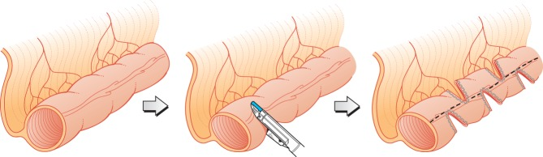
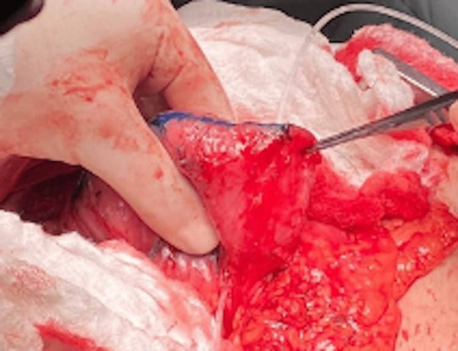
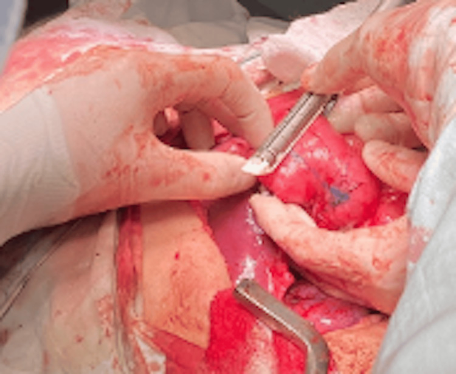

3053 — Phẫu thuật kéo dài ruột (STEP/LILT) & cai nuôi dưỡng tĩnh mạch ở trẻ hội chứng ruột ngắn
Tags: pattern:gian-long-ruot pattern:phu-thuoc-pn pattern:cham-dung-nap vung:bung vung:ruot-non anatomy:ta-trang-hong-trang protocol:chup-ruot-can-quang protocol:CT-bung protocol:noi-soi-o-bung incidentaloma:khong
Mức chắc chắn (certainty): tổng hợp y văn (literature synthesis) — ghép tổng quan có hệ thống 27 bài 2021–2025 (Children 2025, PMC12110667), tổng quan 2026 về SBS nhi (J Clin Med 2026, PMC13607937), so sánh ba kỹ thuật kéo dài ruột (Curr Opin Organ Transplant 2022, PMC8900888), sổ bộ STEP quốc tế 111 bệnh nhân (J Am Coll Surg 2013, PMC4887155), đoàn hệ 36 trẻ Pháp (Children 2025, PMC12110667 dẫn), 64 người lớn STEP (Ann Surg 2026, PMC13258089), 12 trẻ Thụy Điển (Br J Surg 2014, PMC4282069), 20 trẻ sinh non theo phác đồ BEAR (Pediatr Surg Int 2025, PMC12103355), đoàn hệ Queensland (Intest Fail 2025, PMC12851332) và ca loạt STEP tá tràng ở người lớn (Cureus 2025, PMC12119115). Không có ca do nhóm tự chụp.
Câu hỏi thực hành: bé trai 8 tháng, hoại tử ruột non do viêm ruột hoại tử sơ sinh, còn 25 cm hỗng tràng nối đại tràng, phụ thuộc nuôi dưỡng tĩnh mạch (parenteral nutrition — PN) 6 tháng. Siêu âm/CT: tá tràng–hỗng tràng giãn 4,5 cm, thành mỏng, không thấy chỗ tắc; bé nôn dịch mật, chướng bụng, nhiều đợt nhiễm khuẩn huyết do vi khuẩn mọc quá mức. Câu hỏi: đã đủ chỉ định mổ kéo dài ruột chưa, chọn STEP hay LILT, và dấu hiệu nào dự báo cai được PN? Bài chốt ba quyết định: (1) giãn ruột đơn thuần không phải chỉ định — phải có giãn + chậm dung nạp/SIBO sau tối ưu nội khoa; (2) STEP là lựa chọn đầu tay ở đa số trung tâm, LILT cho ruột giãn đều và mạch mạc treo thuận lợi; (3) cai PN phụ thuộc chiều dài ruột trước mổ, bilirubin trực tiếp và mức tăng chiều dài sau mổ, không phụ thuộc một ngưỡng chiều dài cố định.
1. Tổng quan bệnh học – cơ chế hình ảnh: vì sao phải vừa thu nhỏ vừa kéo dài
- Định nghĩa SBS nhi (không thống nhất giữa các trung tâm): Hiệp hội Phẫu thuật Nhi Canada định nghĩa SBS = cần PN > 6 tuần sau cắt ruột lớn, HOẶC chiều dài ruột còn lại < 25% chiều dài dự kiến theo tuổi thai (Children 2025, PMC12110667). Ruột non đủ tháng dài 150–250 cm (Nutrients 2023, PMC10221592 — dẫn trong bài 3006).
- Ba kiểu giải phẫu quyết định tiên lượng (Children 2025): type 1 — hỗng tràng/ileostomy tận; type 2 — nối hỗng tràng–đại tràng; type 3 — nối hỗng tràng–hồi tràng, còn đại tràng và van hồi manh tràng (ileocecal valve — ICV). Còn đại tràng và ICV làm tăng hấp thu nước/điện giải và làm chậm vận chuyển.
- Dịch tễ thật: tại Queensland, IF 13,7/100.000 trẻ sinh sống và SBS–IF 10,51/100.000; 71% (15/21) IF và 81% (13/16) SBS đạt tự chủ đường tiêu hóa, không tử vong (Intest Fail 2025, PMC12851332). Trẻ đạt tự chủ có ruột còn lại 47,5 cm (IQR 33) so với 26 cm ở trẻ còn PN (p = 0,04); mỗi cm ruột còn lại OR 0,73 (0,57–0,93), mất đại tràng OR 0,84 (0,69–0,92) cho nguy cơ IF.
- TẠI SAO giãn ruột vừa là phản ứng thích nghi vừa là vấn đề: sau cắt ruột, đoạn còn lại giãn để tăng diện tích hấp thu, nhưng theo định luật Laplace (thành ruột: sức căng ∝ áp lực × bán kính), bán kính tăng làm sức căng thành tăng, co bóp không hiệu quả → ứ trệ, vi khuẩn mọc quá mức (small intestinal bacterial overgrowth — SIBO), nôn dịch mật, kém dung nạp. Vì vậy phẫu thuật có hai mục tiêu đối lập bổ sung: thu nhỏ đường kính (tapering) để co bóp hiệu quả và tăng chiều dài để tăng diện tích hấp thu.
- STEP hoạt động thế nào: dùng stapler tuyến tính bắn vuông góc với trục ruột, xen kẽ hai bên như “khóa kéo”, tạo hình chữ chi; khoảng cách mỗi lần bắn 2–2,5 cm để giữ đường kính lòng 2 cm; đường kính lòng tối thiểu 3,5–4 cm mới làm được (Curr Opin Organ Transplant 2022, PMC8900888). Không cần chia mạc treo, không mở ruột, có thể lặp lại và dùng được cho tá tràng.
- Vì sao giữ lòng 2 cm: lòng quá nhỏ gây hẹp/tắc đường khâu, lòng quá lớn không cải thiện vận chuyển; 2 cm là mốc thực hành được dùng trong các loạt STEP (PMC8900888).
- Hiệu quả định lượng: STEP làm dài thêm 50–70% chiều dài ruột (Children 2025), trung bình 75% trong phân tích 19 nghiên cứu (PMC8900888); đoàn hệ Pháp 36 trẻ: +50%, trung vị +16 cm, 42% cai PN, nhóm còn lại giảm nhu cầu PN 19%; tuổi mổ trung vị 10,8 tháng, ruột còn lại trung vị 47 cm (PMC12110667).
- Ai cai được PN — con số cụ thể: sổ bộ STEP quốc tế 111 bệnh nhân, 97 đủ theo dõi: 47% (37/78) đạt tự chủ hoàn toàn sau STEP lần 1, trung vị 21 tháng (KTC 95% 12–30), tử vong 11%, 5 ca ghép ruột; chiều dài ruột trước STEP dài hơn dự báo tự chủ (p = 0,002), còn bilirubin trực tiếp cao và ruột trước mổ ngắn hơn dự báo ghép/tử vong (p = 0,05 và p < 0,001) (J Am Coll Surg 2013, PMC4887155).
- Người lớn cũng làm được: 64 bệnh nhân (81 lần STEP), ruột còn lại 79 ± 47 cm, citrulline 22 ± 12 µmol/L; theo dõi 35 ± 24 tháng, sống đặc hiệu bệnh 91% sau 5 năm, 80% đạt tự chủ đường tiêu hóa; STEP tích hợp trong phẫu thuật tái tạo ruột khả thi ở 44% ứng viên; ASA IV là yếu tố nguy cơ tử vong duy nhất (p = 0,05) (Ann Surg 2026, PMC13258089).
- Dấu hiệu dự báo cai PN bằng xét nghiệm: trong đoàn hệ dùng teduglutide, citrulline ≥ 14 µmol/L và nhu cầu PN < 35 kcal/kg/ngày dự báo cai hoàn toàn; ruột còn lại dài hơn, Z-score cân nặng cao hơn và men gan bình thường dự báo đáp ứng (EClinicalMedicine 2025, PMC12274882).
- Vai trò của thuốc: teduglutide (đồng vận GLP-2) 0,05 mg/kg/ngày giúp 69% trẻ giảm ≥ 20% PN sau 24 tuần, nhưng chỉ 10% đạt tự chủ — thuốc làm chậm/giảm PN, không thay thế phẫu thuật khi ruột đã giãn mất bù (Children 2025, PMC12110667).
2. Mẫu hình + chẩn đoán phân biệt theo hình thái – vận chuyển (Gamut)
- Mẫu hình 1 — “giãn + chậm dung nạp + SIBO”: ruột giãn ≥ 3,5–4 cm, nôn dịch mật, chướng, cấy dịch ruột dương tính, kém tăng cân → ứng viên STEP/LILT sau khi tối ưu nội khoa.
- Mẫu hình 2 — “giãn nhưng dung nạp tốt”: giãn là thích nghi sinh lý, trẻ vẫn tăng cân và giảm dần PN → không mổ; mổ lúc này làm mất diện tích hấp thu.
- Mẫu hình 3 — “giãn + mức dịch/mức khí + tắc hoàn toàn”: hẹp đường khâu cũ, dính, xoắn, thoát vị nội → tắc cơ học, cần mổ giải quyết nguyên nhân, không phải kéo dài.
- Mẫu hình 4 — “ruột ngắn, không giãn, tăng nhu động”: mất đoạn ruột nhưng lòng không giãn → không có “vật liệu” để kéo dài; cân nhắc phẫu thuật làm chậm vận chuyển (van, đoạn ruột ngược dòng) — chống chỉ định nếu có rối loạn nhu động (Children 2025).
- Mẫu hình 5 — “giãn + vàng da tăng bilirubin trực tiếp”: ưu tiên điều trị IFALD trước; bilirubin trực tiếp cao dự báo ghép/tử vong sau STEP (PMC4887155).
- Mẫu hình 6 — “thất bại phục hồi + biến chứng PN đe dọa tính mạng”: nhiễm khuẩn huyết tái diễn, mất đường vào tĩnh mạch, IFALD tiến triển → ghép ruột, không tiếp tục kéo dài vô hạn.
- Gamut theo vị trí: tá tràng giãn → STEP tá tràng (chỉ có ca loạt nhỏ ở người lớn); hỗng tràng giãn đều → STEP hoặc LILT; hồi tràng + ICV còn → ưu tiên bảo tồn ICV, STEP; đại tràng mất → tiên lượng cai PN kém hơn (OR 0,84).
3. Bảng so sánh phân biệt (ma trận đối chiếu)
| Thực thể / chiến lược (entity) | Hình ảnh – giải phẫu điển hình | Chốt vào (rule-in) | Chốt loại (rule-out) | Gợi ý xác nhận |
|---|---|---|---|---|
| STEP (serial transverse enteroplasty) | Ruột giãn ≥ 3,5–4 cm, thành mỏng, không tắc; stapler xen kẽ giữ lòng 2 cm, cách 2–2,5 cm | Giãn + chậm dung nạp/SIBO + còn đủ chiều dài để bắn stapler | Lòng < 3,5 cm hoặc ruột không giãn → không có chỉ định | Chụp ruột cản quang/CT đo đường kính; mổ đánh giá trực tiếp |
| LILT (Bianchi) | Ruột giãn đều, mạch mạc treo thuận lợi; chia dọc ruột thành hai ống song song → gấp đôi chiều dài | Đoạn giãn dài > 20 cm, mạch mạc treo cho phép chia dọc | Đoạn < 20 cm (biến chứng tăng) hoặc mạch mạc treo đã tổn thương | Chụp mạch/CT mạch mạc treo; đánh giá trong mổ |
| SILT (spiral intestinal lengthening and tailoring) | Cắt xoắn ốc, kéo dài; dùng được khi giãn ≤ 4 cm; giữ hướng sợi cơ | Giãn nhẹ – vừa, không đủ cho STEP, cần thu nhỏ + kéo dài | Nhiễm bẩn ổ bụng nặng (phải mở ruột) hoặc thiếu kinh nghiệm | Kinh nghiệm trung tâm; ca loạt nhỏ |
| Tiếp tục phục hồi nội khoa | Ruột giãn nhưng dung nạp tăng dần, bilirubin giảm, tăng cân | PN giảm đều, không biến chứng, còn dư địa thích nghi | SIBO tái diễn + không tăng cân + giãn tiến triển | Theo dõi 3–6 tháng: cân nặng, PN kcal, bilirubin, citrulline |
| Ghép ruột | Không có tổn thương hình ảnh đặc hiệu; bệnh cảnh suy ruột + biến chứng PN | IFALD tiến triển, mất đường vào tĩnh mạch, nhiễm khuẩn huyết tái diễn, thất bại phục hồi | Chỉ ruột rất ngắn mà vẫn ổn định trên PN → chưa ghép (không dùng ngưỡng chiều dài cố định) | Hội chẩn đa chuyên khoa; đánh giá gan, mạch máu, miễn dịch |

Ba thì của STEP: ruột giãn (trái) → bắn stapler vuông góc với trục ruột (giữa) → ruột dài và hẹp hơn theo hình chữ chi (phải). Nguồn: Br J Surg 2014, PMCID PMC4282069, CC BY-NC-ND — nguyên bản, không crop, không ghép.Đọc đúng “giãn ruột” trên hình ảnh
- Đo đường kính tại chỗ giãn nhất, vuông góc với trục ruột, ghi mm; so với chiều cao đốt sống thắt lưng để hiệu chỉnh nếu phim không chuẩn.
- Chiều dài ruột non KHÔNG đo chính xác trên CT — CT/VLCT đánh giá đường kính, thành, mức dịch, vị trí chuyển tiếp; chiều dài thật đo dọc bờ chống mạc treo trong mổ. Đừng dùng chiều dài ước tính trên CT để quyết định mổ.
- Chụp ruột cản quang (upper GI + follow-through) là cách kinh điển để đo chiều dài, đường kính, thời gian vận chuyển và phát hiện hẹp/tắc; ở trẻ nặng, siêu âm tại giường đủ để theo dõi đường kính và mức dịch.
4. Protocol chụp + ngưỡng & thuật toán điều trị
- Đánh giá trước mổ (bắt buộc đủ bộ):
- Hình ảnh: siêu âm bụng (đường kính, thành, mức dịch, nhu động); chụp ruột cản quang khi cần bản đồ chiều dài/đường kính/vận chuyển; CT bụng liều thấp khi nghi tắc, áp-xe, thiếu máu ruột hoặc cần mô tả giải phẫu trước mổ.
- Xét nghiệm: citrulline (mốc ≥ 14 µmol/L hỗ trợ khả năng cai PN), bilirubin trực tiếp, AST/ALT, albumin, CRP, điện giải, B12 và vitamin tan trong mỡ, khí máu khi toan lactic.
- Dinh dưỡng: nhu cầu PN tính kcal/kg/ngày (ngưỡng < 35 kcal/kg/ngày hỗ trợ cai), theo dõi cân nặng/chiều cao, lượng dịch, số đợt nhiễm khuẩn huyết và đường vào tĩnh mạch.
- Ngưỡng và thời điểm mổ:
- Giãn ≥ 3,5–4 cm + thất bại tối ưu nội khoa ≥ 6 tháng (tiêu chuẩn LILT kinh điển: phụ thuộc PN và không đạt ≥ 50% nhu cầu calo đường tiêu hóa sau 6 tháng điều trị bảo tồn đầy đủ) (PMC12110667).
- Tuổi mổ thực tế: trung vị 10,8 tháng (Pháp), 5,8 tháng (Thụy Điển) — không có ngưỡng tuổi tuyệt đối.
- Chống chỉ định tương đối: nhiễm trùng ổ bụng đang hoạt động, suy gan nặng chưa tối ưu, rối loạn đông máu, ruột không giãn.
- Chọn kỹ thuật:
- STEP khi ruột giãn ≥ 3,5–4 cm, cần thu nhỏ + kéo dài, không muốn chia mạc treo, có thể lặp lại; LILT khi đoạn giãn dài > 20 cm và mạch mạc treo cho phép; SILT khi giãn ≤ 4 cm hoặc muốn giữ hướng sợi cơ, nhưng ít kinh nghiệm toàn cầu.
- Thuật toán một lượt:
flowchart TD
A[Tre phu thuoc PN + gian ruot] --> B[Toi uu noi khoa 3-6 thang:<br/>nuoi duong, GLP-2, dieu tri SIBO, IFALD]
B --> C{Con non an, tang can,<br/>PN giam deu?}
C -->|Co| D[Tiep tuc phuc hoi<br/>theo doi 3 thang]
C -->|Khong| E[Do duong kinh va chieu dai:<br/>sieu am, chup ruot can quang, CT]
E --> F{Duong kinh lon hon 3,5 cm<br/>va khong tac co hoc?}
F -->|Khong| G[Tim nguyen nhan khac:<br/>hep, dinh, roi loan nhu dong]
F -->|Co| H{Bilirubin truc tiep<br/>va tinh trang gan on?}
H -->|Khong| I[Dieu tri IFALD truoc<br/>hoi chan gan - dinh duong]
H -->|Co| J{Chieu dai doan gian<br/>lon hon 20 cm?}
J -->|Co| K[STEP hoac LILT<br/>tuy mach mac treo]
J -->|Khong| L[STEP uu tien<br/>co the lap lai]
K --> M[Theo doi 6-24 thang:<br/>PN kcal, can nang, citrulline, bilirubin]
L --> M
M --> N{Tu chu duong tieu hoa?}
N -->|Co| O[Cai PN, theo doi dinh duong]
N -->|Khong| P[Danh gia lai: STEP lan 2,<br/>ghep ruot neu bien chung PN]
- Kết quả – biến chứng cần nhớ:
- STEP: dài thêm 50–75%; cai PN 42–73%; sổ bộ 47% sau STEP 1, trung vị 21 tháng; tử vong 11%; biến chứng rò đường khâu, chảy máu/loét tại đường khâu, hẹp, tắc, áp-xe, giãn lại cần STEP lần 2 (PMC4887155; PMC12110667).
- LILT: gấp đôi chiều dài; cai PN 55,5–100% trong 2 năm (tổng quan cũ) nhưng 32–52% trong các loạt gần đây và tử vong cao hơn STEP (PMC8900888; PMC12110667).
- SILT: dài thêm trung vị 56%, giảm 50% đường kính, PN từ 7 → 4 đêm/tuần trong loạt 5 trẻ (PMC8900888).
- Ghép ruột: 19 ca tại Úc (2010–2026), sống 1 năm 93% bệnh nhân/87% mảnh ghép, 5 năm 75%/67%; tự chủ sau ghép trung vị 21 ngày (17–30); 40% có thải ghép (Intern Med J 2026, PMC13409190).
5. Biến thể bình thường và cạm bẫy
- Giãn ruột thích nghi không triệu chứng: trẻ vẫn ăn tăng, tăng cân, PN giảm — không mổ. Tổng quan 2026 nói rõ: giãn ruột “không tự nó là chỉ định” phẫu thuật tái tạo (PMC13607937).
- Không dùng một ngưỡng chiều dài cố định để chỉ định ghép: cùng tổng quan 2026 ghi nhận trẻ ruột cực ngắn vẫn đạt tự chủ, nên quyết định dựa trên diễn tiến đa chuyên khoa, không dựa riêng số cm.
- Đo chiều dài trên CT là bẫy: ruột gấp khúc, thành mỏng, chồng lớp → ước tính thấp hơn thực tế; chiều dài quyết định trong mổ dọc bờ chống mạc treo, không kéo căng.
- SIBO giả tắc: nôn + giãn + mức dịch có thể do vi khuẩn mọc quá mức, không phải tắc cơ học; mổ lại khi chưa điều trị SIBO dễ cắt nhầm ruột còn hấp thu được.
- Loét/chảy máu tại đường khâu: biến chứng đã báo cáo của STEP; thiếu máu sau mổ cần nội soi, không mặc định do “loét dạ dày”.
- Giãn lại sau STEP: STEP làm thay đổi hướng sợi cơ, ruột có thể giãn lại; SILT giữ hướng sợi cơ nên ít giãn lại hơn về lý thuyết, nhưng kinh nghiệm còn ít (PMC8900888).
- Tá tràng: STEP tá tràng chỉ có ca loạt nhỏ, chủ yếu ở người lớn; không mặc định kết quả như STEP hỗng tràng (PMC12119115).
- IFALD nặng: bilirubin trực tiếp cao làm tăng nguy cơ ghép/tử vong sau STEP — tối ưu gan trước, đừng mổ vì “đã đủ tháng chờ”.
6. Tự lượng giá — Blind Quiz
Ca 1 — Nam 27 tuổi, ruột cực ngắn sau thiếu máu mạc treo; CT bụng có đường đo vàng.

- Gợi ý lâm sàng: phụ thuộc PN, không còn ruột non thấy được trên CT.
- Câu hỏi: đường đo vàng đo gì, giá trị bao nhiêu? Ngưỡng nào cho phép làm STEP? Có phải chỉ định mổ ngay không?
Bấm để hiện đáp án (findings + chẩn đoán)
- Findings: đường đo vàng đo đường kính tá tràng giãn = 53,3 mm (bài gốc mô tả “tới 6 cm”), không thấy ruột non; không có mức khí–dịch hay dấu tắc cơ học.
- Ngưỡng: STEP cần lòng ≥ 3,5–4 cm và giữ lòng đích 2 cm; 53,3 mm vượt ngưỡng về mặt kỹ thuật, nhưng chỉ mổ khi có chậm dung nạp/SIBO sau tối ưu nội khoa, không chỉ vì giãn.
- Chẩn đoán: hội chứng ruột cực ngắn (ultra-short bowel) — ứng viên STEP tá tràng; trong loạt 3 ca, 1 ca đạt tự chủ, 2 ca giảm PN 33% và 20%.
- Nguồn ảnh: Cureus 2025, PMCID PMC12119115, CC BY 4.0 — nguyên bản, giữ nguyên đường đo của tác giả.
Ca 2 — Nữ 42 tuổi, trong mổ STEP: lần bắn stapler đầu tiên.

- Câu hỏi: stapler được bắn theo hướng nào so với trục ruột? Vì sao lần sau phải bắn ngược chiều? Khoảng cách giữa hai lần bắn?
Bấm để hiện đáp án (findings + chẩn đoán)
- Findings: thì đầu bắn từ bờ tự do về phía tụy, vuông góc với trục ruột, trên tá tràng giãn; đường khâu màu xanh lam ở bờ trước.
- Vì sao xen kẽ: các lần bắn đối diện nhau tạo hình chữ chi, mỗi đoạn ruột vẫn được nuôi bởi mạc treo; nếu bắn cùng một phía sẽ chỉ gấp ruột mà không kéo dài.
- Khoảng cách: 2–2,5 cm giữa các lần bắn để lòng còn 2 cm; bắn quá sát → hẹp/tắc đường khâu.
- Nguồn ảnh: Cureus 2025, PMCID PMC12119115, CC BY 4.0.
Ca 3 — Cùng bệnh nhân, lần bắn thứ ba: đường kính tá tràng còn 2,5 cm.

- Câu hỏi: vì sao không thu nhỏ tiếp xuống 1,5 cm? Sau thì này cần kiểm tra gì trước khi đóng bụng?
Bấm để hiện đáp án (findings + chẩn đoán)
- Findings: lần bắn thứ ba làm đường kính còn 2,5 cm; ruột đã dài và thẳng hơn, đường khâu xếp song song.
- Vì sao dừng ở ~2 cm: lòng < 2 cm làm tăng hẹp và tắc đường khâu, đặc biệt ở trẻ nhỏ; mục tiêu là vừa đủ hẹp để co bóp, vừa đủ rộng để lưu thông.
- Kiểm tra trước đóng: tưới máu đoạn ruột (màu, nhu động, chảy máu bờ cắt), kín đường khâu (bơm xanh methylene/nghiệm pháp khí), không xoắn mạc treo, và đo chiều dài mới dọc bờ chống mạc treo.
- Nguồn ảnh: Cureus 2025, PMCID PMC12119115, CC BY 4.0.
Bài liên quan chéo
- 3006 – Hội chứng ruột ngắn & IFALD ở trẻ
- 646 – Hội chứng khoang bụng ở trẻ
- 630 – U bụng nhi: neuroblastoma vs Wilms
- 693 – Theo dõi sau cắt u gan ở trẻ
- 300 – Tổng quan hệ Cơ – Xương – Khớp
Ảnh
3053_step_so-do_PMC4282069-F1.jpg— sơ đồ ba thì STEP (CC BY-NC-ND, nguyên bản).3053_step_CT-bung_PMC12119115-F1.jpg— CT coronal: tá tràng giãn 53,3 mm, không thấy ruột non.3053_step_mo-lan1_PMC12119115-F4.jpg— lần bắn stapler đầu tiên, vuông góc trục ruột.3053_step_mo-lan3_PMC12119115-F11.jpg— lần bắn thứ ba, đường kính còn 2,5 cm.- Nguồn, giấy phép từng ảnh:
images/CREDITS.md; link bài gốc:sources.md.
Không dùng để chẩn đoán độc lập khi chưa có người hướng dẫn.